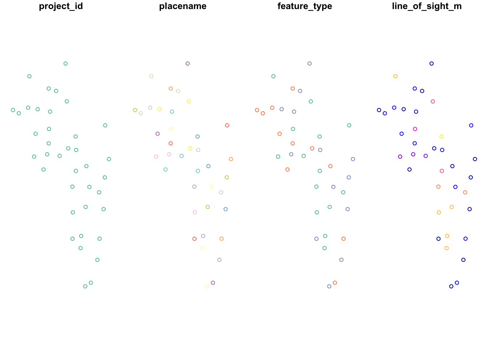
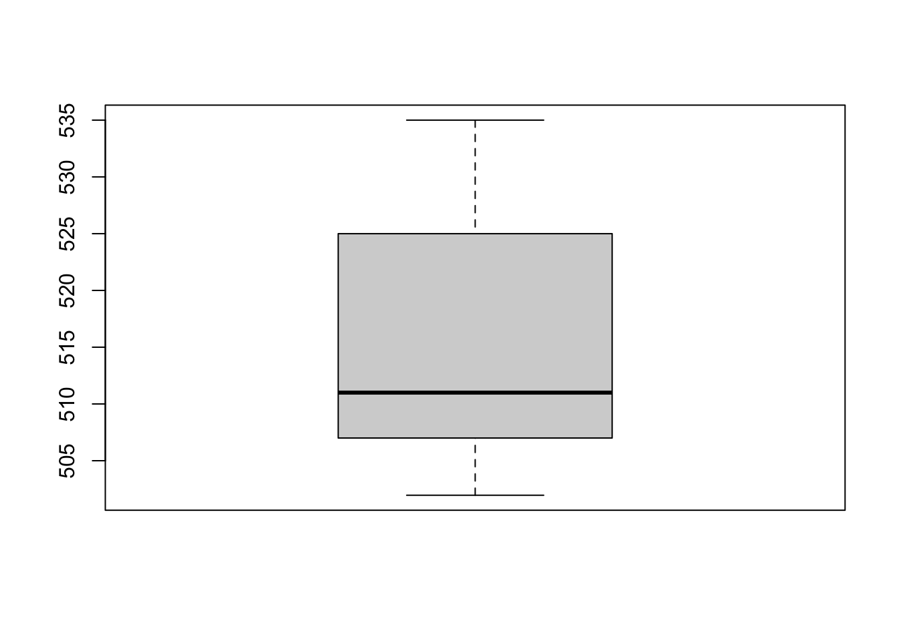
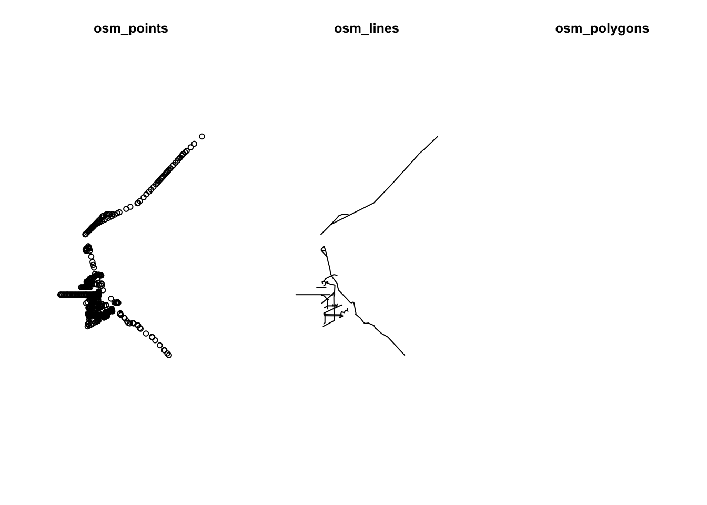
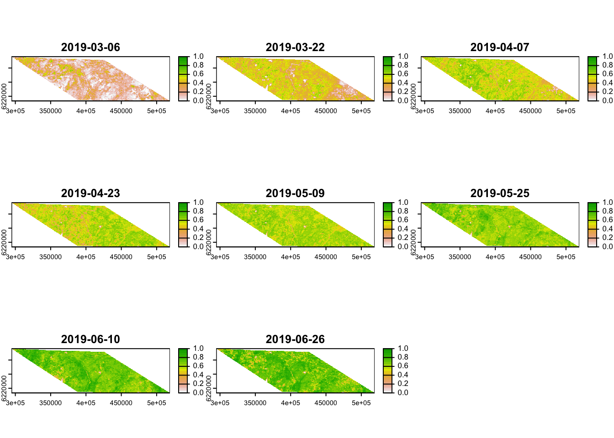
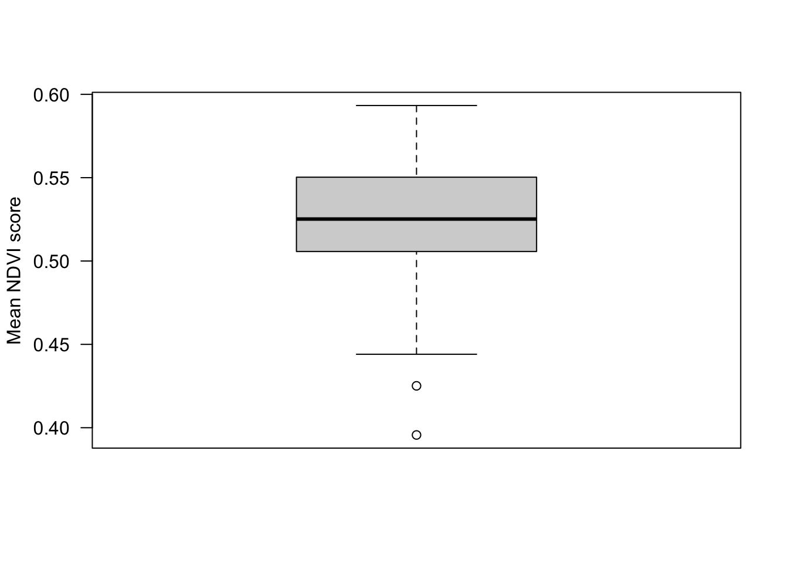
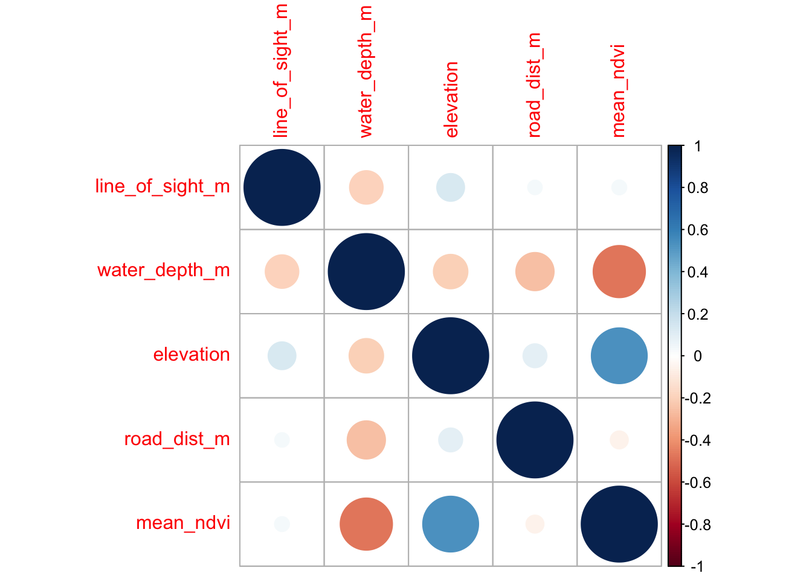
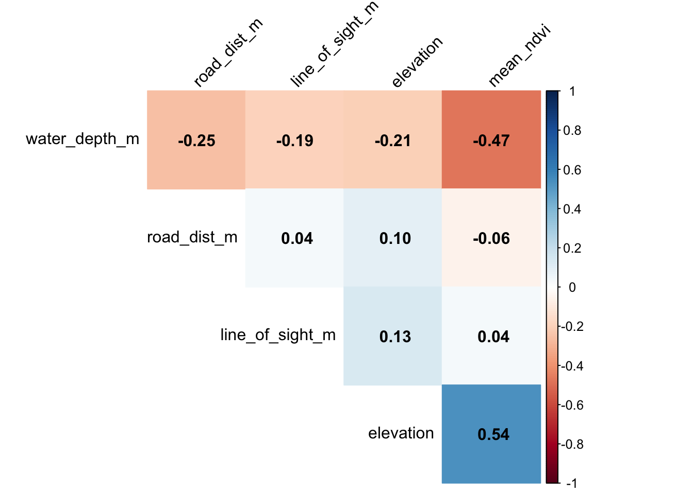

Chapter 7 Analysis covariates
Once we have created the building blocks for our data analysis dataframes, we must bring in the variables which will be used in the modelling steps. It is important to not that there are millions of ways to add covariates - both in terms of how you do it, and where you derive the data from. The covariates you use will depend on the questions you have, and the context of your survey. The examples provided here are not comprehensive and serve only as a guide!
Create a new .R script
Call it 02_example_covariates.R.
Load the required packages
library(kableExtra);library(dplyr); library(sf); library(modisfast); library(lubridate); library(corrplot); library(traitdata); library(terra); library(osmdata); library(elevatr)We can simplify the covariate options we have available into two distinct categories:
- Species traits
The traits are species-level covariates which we think are important in structuring their responses to other covariates, such as human modification.
# Start by reading in your species list
sp_summary <- read.csv("data/processed_data/AlgarRestorationProject_species_list.csv", header=T)- Location-level covariates
Location-level covariates are characteristics of the camera locations which are either fundamental to your question (such as the habitat type, degree of human modification, or distance to the nearest road), or they are things you are not directly interested in but must account for in your analyses. The way we derive and treat these variables are identical however.
7.1 Species traits
It is easier than ever before to add trait data to your species lists, particularly with the advent of R packages which pool multiple data sources such as the traitdata database, which to date, compiles data from 32 different sources.
Below we use this package to add trait data to the project species list:
# This package isn't available on Cran, so we must use the remotes package
#library(remotes)
#remotes::install_github("RS-eco/traitdata", build_vignettes = T, force=T)
# Load the library
library(traitdata)To pull the data for a specific database we use the following code:
To explore the full list of available datasets click this link.
Let’s take a look at what categories we have available to us:
head(elton_mammals) %>% kbl() %>% scroll_box(height = "200px") %>%
kable_paper("striped", full_width = F)| MSW3_ID | Genus | Species | Family | Diet.Inv | Diet.Vend | Diet.Vect | Diet.Vfish | Diet.Vunk | Diet.Scav | Diet.Fruit | Diet.Nect | Diet.Seed | Diet.PlantO | Diet.Source | Diet.Certainty | ForStrat.Value | ForStrat.Certainty | ForStrat.Comment | Activity.Nocturnal | Activity.Crepuscular | Activity.Diurnal | Activity.Source | Activity.Certainty | BodyMass.Value | BodyMass.Source | BodyMass.SpecLevel | Full.Reference | scientificNameStd |
|---|---|---|---|---|---|---|---|---|---|---|---|---|---|---|---|---|---|---|---|---|---|---|---|---|---|---|---|---|
| 1 | Tachyglossus | aculeatus | Tachyglossidae | 100 | 0 | 0 | 0 | 0 | 0 | 0 | 0 | 0 | 0 | Ref_1 | ABC | G | A | 1 | 1 | 0 | Ref_1 | ABC | 3025.00 | Ref_117 | 1 | Nowak R.M. (1999). Walker’s mammals of the world. Sixth edition edn. The Johns Hopkins University Press, Baltimore, Maryland | Tachyglossus aculeatus | |
| 2 | Zaglossus | attenboroughi | Tachyglossidae | 100 | 0 | 0 | 0 | 0 | 0 | 0 | 0 | 0 | 0 | Ref_65 | ABC | G | A | 1 | 0 | 0 | Ref_1 | ABC | 8532.39 | Ref_2, Ref_3 | 0 | Leary, T., Seri, L., Flannery, T., Wright, D., Hamilton, S., Helgen, K., Singadan, R., Menzies, J., Allison, A., James, R., Aplin, K., Salas, L. & Dickman, C. 2008.�Zaglossus attenboroughi. In: IUCN 2010. IUCN Red List of Threatened Species. Version 2010. | Zaglossus attenboroughi | |
| 3 | Zaglossus | bartoni | Tachyglossidae | 100 | 0 | 0 | 0 | 0 | 0 | 0 | 0 | 0 | 0 | Ref_2 | D1 | G | A | 1 | 0 | 0 | Ref_1 | ABC | 7180.00 | Ref_131 | 1 | Genus Average | Zaglossus bartoni | |
| 4 | Zaglossus | bruijni | Tachyglossidae | 100 | 0 | 0 | 0 | 0 | 0 | 0 | 0 | 0 | 0 | Ref_1 | ABC | G | A | 1 | 0 | 0 | Ref_1 | ABC | 10139.50 | Ref_117 | 1 | Nowak R.M. (1999). Walker’s mammals of the world. Sixth edition edn. The Johns Hopkins University Press, Baltimore, Maryland | Zaglossus bruijni | |
| 5 | Ornithorhynchus | anatinus | Ornithorhynchidae | 80 | 0 | 0 | 20 | 0 | 0 | 0 | 0 | 0 | 0 | Ref_1 | ABC | G | A | 1 | 1 | 1 | Ref_1 | ABC | 1484.25 | Ref_117 | 1 | Nowak R.M. (1999). Walker’s mammals of the world. Sixth edition edn. The Johns Hopkins University Press, Baltimore, Maryland | Ornithorhynchus anatinus | |
| 6 | Caluromys | philander | Didelphidae | 20 | 0 | 0 | 0 | 10 | 0 | 20 | 0 | 10 | 40 | Ref_1 | ABC | Ar | A | 1 | 1 | 0 | Ref_1 | ABC | 229.25 | Ref_117 | 1 | Nowak R.M. (1999). Walker’s mammals of the world. Sixth edition edn. The Johns Hopkins University Press, Baltimore, Maryland | Caluromys philander |
Lets make a new column sp which matches the species column in our ‘sp_summary’ dataset. We will use this as the “key” variable to extract the trait data.
We do not want to take all of the trait data, so lets subset to BodyMass.Value and the activity data Activity.Nocturnal Activity.Crepuscular Activity.Diurnal.
tmp <- elton_mammals[, c("sp","BodyMass.Value", "Activity.Nocturnal", "Activity.Crepuscular", "Activity.Diurnal")]
# Lets rename the columns to make them more usable
tmp <- tmp %>% rename(
mass_g = BodyMass.Value,
act_noct = Activity.Nocturnal,
act_crep = Activity.Crepuscular,
act_diur = Activity.Diurnal)
sp_summary <- left_join(sp_summary, tmp)And then check our output:
| class | order | family | genus | species | sp | common_name | mass_g | act_noct | act_crep | act_diur |
|---|---|---|---|---|---|---|---|---|---|---|
| Mammalia | Artiodactyla | Cervidae | Alces | alces | Alces.alces | moose | 356998.16 | 1 | 1 | 0 |
| Mammalia | Artiodactyla | Cervidae | Cervus | canadensis | Cervus.canadensis | elk | NA | NA | NA | NA |
| Mammalia | Artiodactyla | Cervidae | Odocoileus | virginianus | Odocoileus.virginianus | white-tailed deer | 55508.56 | 1 | 1 | 0 |
| Mammalia | Artiodactyla | Cervidae | Rangifer | tarandus | Rangifer.tarandus | caribou | 86033.98 | 0 | 0 | 1 |
| Mammalia | Carnivora | Canidae | Canis | latrans | Canis.latrans | coyote | 13406.33 | 1 | 1 | 0 |
| Mammalia | Carnivora | Canidae | Canis | lupus | Canis.lupus | gray wolf | 32183.33 | 1 | 1 | 0 |
| Mammalia | Carnivora | Canidae | Vulpes | vulpes | Vulpes.vulpes | red fox | 5476.17 | 1 | 1 | 0 |
| Mammalia | Carnivora | Felidae | Lynx | canadensis | Lynx.canadensis | canada lynx | 9373.25 | 1 | 0 | 0 |
| Mammalia | Carnivora | Mustelidae | Lontra | canadensis | Lontra.canadensis | river otter | 8087.42 | 1 | 1 | 0 |
| Mammalia | Carnivora | Mustelidae | Martes | americana | Martes.americana | american marten | 1250.00 | 1 | 0 | 0 |
| Mammalia | Carnivora | Ursidae | Ursus | americanus | Ursus.americanus | black bear | 99949.36 | 1 | 0 | 0 |
| Mammalia | Lagomorpha | Leporidae | Lepus | americanus | Lepus.americanus | snowshoe hare | 1710.02 | 1 | 0 | 0 |
| Mammalia | Lagomorpha | Leporidae | Oryctolagus | cuniculus | Oryctolagus.cuniculus | rabbit | 1832.22 | 1 | 0 | 0 |
| Mammalia | Rodentia | Sciuridae | Tamiasciurus | hudsonicus | Tamiasciurus.hudsonicus | red squirrel | 201.17 | 0 | 0 | 1 |
If there are any NA’s, it could be for several reasons:
- There is no trait data for that species - in this case you could either:
leave them as NA’s (excluding them from later analyses) or if you are lucky, your analysis framework might be able to accommodate missing trait data
Give the species the mean values obtained from other species in its genus
- There is a mismatch in taxonomic resolution - you are working with a subspecies that isn’t recognized. This is the case here with elk! Lets replace it with the data for (Cervus elaphus)
sp_summary[sp_summary$sp=="Cervus.canadensis", c("mass_g", "act_noct","act_crep","act_diur")] <-
elton_mammals[elton_mammals$sp=="Cervus.elaphus", c("BodyMass.Value", "Activity.Nocturnal", "Activity.Crepuscular", "Activity.Diurnal")]Whatever you do, remember to report it in your methods section!
Let’s save our species list for a rainy day!
7.2 Camera station covariates
It is common to have a suite of covariates which you would like to investigate the effects of in your datasets. These could take the form of habitat designations or treatment types. These may already be included with your deployment data, or you may need to derive them from a variety of remote sources. In their simplest form, these variable are time invariant (they do not change), however you may have variables which change through time as well (we discuss these at the end). In the following steps, we walk through the process of manipulating and deriving example covariates.
For the time invariant covariates, we will add them to our locs dataframe imported above.
7.2.1 Locally collected covariates
You may have collected some data in the field when deploying or checking your camera traps, and kept that data separate from your camera trap data (e.g. vegetation assessments). Provided that the naming convention you gave to these dataframes is the same as in your camera data (e.g. the location is in a column called placename) - you can do a ’left_join()` to merge the two datasets.
Import a sample set of local covariates:
Lets take a look at the data structure:
| placename | line_of_sight_m |
|---|---|
| ALG001 | 137.12500 |
| ALG002 | 131.52778 |
| ALG003 | 353.65833 |
| ALG004 | 158.04167 |
| ALG005 | 305.81944 |
| ALG006 | 60.12500 |
| ALG007 | 310.58333 |
| ALG008 | 112.75000 |
| ALG009 | 299.02778 |
| ALG010 | 102.30556 |
| ALG011 | 223.56944 |
| ALG012 | 140.91667 |
| ALG013 | 394.56944 |
| ALG014 | 196.87500 |
| ALG015 | 163.11111 |
| ALG016 | 116.11111 |
| ALG017 | 138.19444 |
| ALG018 | 304.29167 |
| ALG019 | 330.97222 |
| ALG020 | 204.40278 |
| ALG021 | 264.94444 |
| ALG022 | 229.13889 |
| ALG023 | 218.29167 |
| ALG024 | 425.43056 |
| ALG025 | 56.97222 |
| ALG026 | 200.05556 |
| ALG027 | 252.95833 |
| ALG028 | 277.50000 |
| ALG029 | 206.52778 |
| ALG030 | 43.38889 |
| ALG031 | 334.27778 |
| ALG032 | 83.00000 |
| ALG033 | 165.00000 |
| ALG034 | 337.79167 |
| ALG035 | 439.61111 |
| ALG036 | 62.69444 |
| ALG037 | 392.61111 |
| ALG038 | 352.75000 |
| ALG039 | 339.76389 |
| ALG040 | 182.75000 |
| ALG041 | 109.25000 |
| ALG042 | 219.56944 |
| ALG043 | 62.41667 |
| ALG044 | 374.26389 |
| ALG045 | 294.83333 |
| ALG046 | 34.50000 |
| ALG047 | 363.80556 |
| ALG048 | 392.93056 |
| ALG049 | 80.77778 |
| ALG050 | 139.36111 |
| ALG051 | 208.12500 |
| ALG052 | 13.95833 |
| ALG053 | 99.30556 |
| ALG054 | 35.47222 |
| ALG055 | 189.06944 |
| ALG056 | 55.41667 |
| ALG057 | 93.04167 |
| ALG058 | 80.91667 |
| ALG059 | 41.00000 |
| ALG060 | 189.90278 |
| ALG061 | 11.16667 |
| ALG062 | 16.00000 |
| ALG063 | 28.94444 |
| ALG064 | 34.27778 |
| ALG065 | 20.11111 |
| ALG066 | 36.94444 |
| ALG067 | 188.83333 |
| ALG068 | 72.27778 |
| ALG069 | 22.85556 |
| ALG070 | 28.61111 |
| ALG071 | 20.05556 |
| ALG072 | 52.44444 |
| ALG073 | 55.94444 |
It is a dataframe where the survey locations are rows and the local covariates, in this case line_of_sight_m, are columns.
To add this data to our station data, we use a left_join() operation from the dplyr() package. It uses a key variable which is common in both data frames to add data from the “right-hand side” to the rows in the “left-hand side” which are not already present. Any rows present in the right-hand side which are not in the left-hand side will be skipped.
For more examples of joins using dplyr() see: https://dplyr.tidyverse.org/reference/mutate-joins.html
7.2.2 Remotely collected covariates
To exploit remotely collected data sources we need to use a package to help us with spatial data.
7.2.2.1 Key skills: sf package
The most intuitive package to learn spatial operations in R is the simple features package (a.k.a. sf). sf allows you to use spatial dataframes in the style of a typical R dataframe. We use this package frequently as it allows you to rapidly change coordinate projection systems (e.g. lat/long to UTM) and rapidly perform spatial operations.
Lets convert our “normal” dataframe to an sf dataframe:
locs_sf <- st_as_sf(locs, # We specify the dataframe
coords=c("longitude", "latitude"), # The XY coordinates
crs=4326) # And the projection codeWhat does an sf object look like? Like a normal dataframe but with a weird header:
## Simple feature collection with 38 features and 4 fields
## Geometry type: POINT
## Dimension: XY
## Bounding box: xmin: -112.6467 ymin: 56.15983 xmax: -112.3848 ymax: 56.49352
## Geodetic CRS: WGS 84
## First 10 features:
## project_id placename feature_type line_of_sight_m
## 1 AlgarRestorationProject ALG027 HumanUse 252.95833
## 2 AlgarRestorationProject ALG029 HumanUse 206.52778
## 3 AlgarRestorationProject ALG031 HumanUse 334.27778
## 4 AlgarRestorationProject ALG032 HumanUse 83.00000
## 5 AlgarRestorationProject ALG035 HumanUse 439.61111
## 6 AlgarRestorationProject ALG036 NatRegen 62.69444
## 7 AlgarRestorationProject ALG037 HumanUse 392.61111
## 8 AlgarRestorationProject ALG038 HumanUse 352.75000
## 9 AlgarRestorationProject ALG039 HumanUse 339.76389
## 10 AlgarRestorationProject ALG043 NatRegen 62.41667
## geometry
## 1 POINT (-112.4735 56.3328)
## 2 POINT (-112.5483 56.39474)
## 3 POINT (-112.482 56.30899)
## 4 POINT (-112.3968 56.40197)
## 5 POINT (-112.4761 56.38428)
## 6 POINT (-112.4058 56.23178)
## 7 POINT (-112.4449 56.27898)
## 8 POINT (-112.4792 56.27039)
## 9 POINT (-112.4094 56.30127)
## 10 POINT (-112.5842 56.38715)That header is important - it tells you the type of data you have (lines, points, polygons etc), and the projection information (CRS).
We like using sf as it is very easy to transform coordinates into different projections using st_transform(). Use the website epsg.io to find the CRS codes for the projection you want - e.g. UTM 12N = 26712, then plug it into the following:
Check the header of locs_utm and you should see that the CRS has changed!
Plotting sf objects is a little bit odd at first. If you try to plot them normally you get lots of replicated plots (one for each column) - try it:

It can be useful as it varied the colors based on the properties of the column. Typically, however, we just want to plot the points themselves. We do that by wrapping the object in st_geometry() this just extracts the geometry of the object.

We will use st_geometry() frequently below.
For more in depth information of sf functionality see: https://r-spatial.github.io/sf/articles/sf1.html
7.2.3 Extracting data from local rasters
Often we have raster data layers stored which we would like to link to our camera locations. We have included one such example here, a raster which reflects the depth from the soil surface to the water table - a proxy for habitat type in this study site. The layer comes from the 1m Wet Area Mapping (WAM) layer:
NOTE the raster has been down scaled to reduce its size for this course - it is no longer at 1m resolution.
The only time we deviate from the sf package is to deal with rasters. Raster objects in R are processed really slowly, especially if the raster is large. So instead we use the terra package.
library(terra)
# Import the example raster using the stars package
ras <- rast("data/raw_data/example_covariates/example_raster.tif")
# Covert your sf locations to the same projection as your raster then put it in terra `vect` format,
locs_terra <- locs_sf %>%
st_transform(crs=st_crs(ras)) %>% # change the projection to match the raster
vect() # Turn it into a terra objectLets check our layers match up!
plot(ras) # The terra package makes nice raster plots with legends
plot(locs_terra, add=T) # Add the survey locations as black dots
Great! Now lets buffer our camera locations by 250 meters, and take the average depth to water for each location:
# Buffer by 250m
locs_terra <- buffer(locs_terra,250)
# Extract the values to a temporary object - tmp
tmp <- terra::extract(ras, locs_terra, fun=mean)
# Make a new column in locs_sf called water_depth_m
# They are ordered the same way so no need for a fancy join
locs_sf$water_depth_m <- tmp$Depth2WatAlgarFinally, lets check the distribution of our data!

Most locations are on the water table (lowland sites), others are above it (upload sites), and they have different vegetation characteristics in the field.
7.2.4 elevatr package
Camera studies often occur over a range of elevations - and we can quickly extract these elevations using the elevatr package and an sf dataframe.
There are two options, epqsONLY AVAILABLE FOR NORTH AMERICA:
library(elevatr)
locs_sf <- get_elev_point(locs_sf,
src="epqs") # Can be slow if you have >500 camera pointsOr Amazon Web Service Terrain Tiles… available globally!
locs_sf <- get_elev_point(locs_sf,
src="aws", #Amazon Web Service Terrain Tiles - available globally
z = 12) # z specifies the zoom level -> the lower the value the faster the code runs, but the coarser the elevation values areThe src option specifies the sources of the DEM data. We use aws Amazon Web Service Terrain Tiles - which are available globally.
The z option specifies the resolution of the underlying DEM, the high the value, the more detailed it is. However, it will take longer to run so do not go crazy.
Regardless of which method you use, let’s plot the output:

An elevation of ~ 500m was expected. Great!
If you want to download a full elevation raster for your area of interests, see the introduction to elevatr
7.2.5 Open Street Maps
Open Street Map (OSM) is an incredible resource for generating covariates for camera trap studies. For example, we might be interested in the distance to the nearest rivers, roads, or trails. All of these anthropogenic features are available in OSM!
CAREFUL OSM data is user contributed and often incomplete and patchy. Always plot your data and never assume it is complete without checking it first. For an example fo this see water bodies below.
First lets load the osmdata package.
The types of features we can extract using the osmdata package are listed here: https://wiki.openstreetmap.org/wiki/Map_features.
7.2.5.1 Highways
Camera trap projects are often interested in human disturbance, of which, highways are an important part.
Let’s start by defining our area of interest. All osmdata queries begin with a bounding box defining the area of the query:
# First buffer our points by 10km to create an area of interest (aoi)
aoi <- st_bbox(st_buffer(locs_sf, 10000)) # Units are in meters We then use this bounding box to return all of the features which cross into it:
highway <- opq(aoi) %>% #using the bounding box
add_osm_feature(key="highway") %>% #extract all highway features
osmdata_sf() # convert them into simple features formatThe data you extract is its own “class” of data made up from multiple data types:
Which looks very intimidating! However, the key thing is that it is made up of multiple data slices, each of which represents an sf dataset. Let’s take a look at three of these
- $osm_points
- $osm_lines
- $osm_polygons
par(mfrow=c(1,3))
plot(st_geometry(highway$osm_points), main="osm_points")
plot(st_geometry(highway$osm_lines), main="osm_lines")
plot(st_geometry(highway$osm_polygons), main="osm_polygons")
The points or the lines datasets look must useful to us, there is nothing in the polygon layer.
Let’s use the lines element and add out camera stations:
par(mfrow=c(1,1))
plot(st_as_sfc(aoi)) # st_as_sfc created a polygon from a `bbox` object
plot(st_geometry(highway$osm_lines), add=T)
plot(st_geometry(locs_sf), col="red", add=T)
We can now calculate the distances from our cameras to these objects using the following codes:
st_nearest_feature gives us the index number of the feature which is closest to each station.
We can the use this to request the distance from that nearest feature to each camera station using st_distance. Which, put together, looks like:
# Create an index of the nearest object in `highway$osm_lines` to locs_sf
index <- st_nearest_feature(locs_sf, highway$osm_lines)
# Use that index to ask for the distance to that object
locs_sf$road_dist_m <- st_distance(locs_sf, highway$osm_lines[index,],
by_element=T) # Note `by_element=T` tells st_distance to evaluate things line by line. 7.2.5.2 water bodies
We also might want to calculate the distances to the nearest water body, and important resource for wildlife. We can do that using the following:
Lets check our data:
par(mfrow=c(1,2))
plot(st_geometry(water$osm_points), main="osm_points")
#plot(st_geometry(water$osm_lines), main="osm_lines") # lines is empty and wont plot
plot(st_geometry(water$osm_polygons), main="osm_polygons")
In this instance, the lines is empty, out best bet are the points or the polygons options!
index <- st_nearest_feature(locs_sf, water$osm_polygons)
locs_sf$water_dist_m <- st_distance(locs_sf, water$osm_polygons[index,], by_element=T) # Note `by_element=T` tells st_distance to evaluate things line by line. For more examples of using the osmdata package see: the projects github page
7.2.6 Vegetation productivity
7.2.6.1 modisfast
modisfast is an R package designed for easy and fast downloads of MODIS Land products, VIIRS Land products, and GPM (Global Precipitation Measurement Mission) Earth Observation data. It allows for easy access to time series data accross large spatial extents directly to your computer! These are the data layers commonly used to extract normalized difference vegetation index (NDVI) and Enhanced Vegetation Index (EVI) information. When using modisfast you should reference:
For a quick into to the package see: https://github.com/ptaconet/modisfast
IMPORTANT to use this package you should create your own login for the Earthdata servers, then specify your EOSDIS credentials.
To create your free account go to : https://urs.earthdata.nasa.gov/.
Let’s load the package:
library(modisfast)
# Specify your own credentials:
log <- mf_login(credentials = c("your_username", "your_password")) # set your own EOSDIS username and passwordFor modisfat to work, we need to provide a sf polygon with an “id” column. We can do this easily using the aoi object we created earlier”
# Create aoi if sf format
aoi_sf <- st_as_sf(data.frame(id = "algar", geom = st_as_sfc(aoi), wkt = "geom", crs = 4326)) # a ROI of interest, format sf polygon
# MODIS collections and variables (bands) of interest
collection <- "MOD13Q1.061" # run mf_list_collections() for an exhaustive list of collections available
variables <- c("_250m_16_days_NDVI") # run mf_list_variables("MOD13Q1.061") for an exhaustive list of variables available for the collection "MOD13A3.061"
# Specify the time range - we will use a winter-summer transition
time_range <- as.Date(c("2019-03-01", "2019-07-01")) # a time range of interest## Building the URLs...## Estimated maximum size of data to be downloaded is 4 Mb## 1 datasets in total : 0 already downloaded and 1 datasets to download
## Downloading the data (destination folder: /var/folders/2s/h6hvv9ps03xgz_krkkstvq_r0000gn/T//RtmpZ2tL4q/modisfast_1aa89fd4e08 ) ...
## Estimated maximum size of data to be downloaded is ~ 4 Mb##
## Actual size of downloaded data is 2 Mb## Importing the dataset as a SpatRaster object...
Easy!
Check the output:

Here we have created an average NDVI score across five months, but we could get monthly averages. Some products are even available at daily resolution!
7.2.7 Digging deeper
If you want to dig into estimating NDVI metrics from camera trap viewshed, rather than from satellite data, check out the phenopix R package. It allows the user to extract visual information from time lapse images. It provides a quantitative daily measure of vegetation phenology at each site (e.g. green-up, senescence, snow cover).
The Phenopix package has a five step process:
- a region of interest (ROI) is identified;
- the red, green, and blue digital numbers from each image in the time series is extracted and an index of relative ‘greenness’ is computed and plotted from the digital numbers;
- the vegetation indices’ data points are filtered to remove inconsistencies;
- a curve is fit to the data and phenophases are determined from the curve;
- phenophase uncertainties are calculated.
To see an application and comparison of these metrics, we highly recommend that you check out Catherine Sun’s (WildCo alumni) paper on the subject:
And the code associated with this publication on the WildCo GitHub Page
7.3 Convert and save your covariates
# Convert columns to numeric
locs_sf$road_dist_m <- as.numeric(locs_sf$road_dist_m)
# Convert it back to a dataframe
locs_sf$geometry <- NULL
locs <- left_join(locs, locs_sf)
# Write the dataset
write.csv(locs, paste0("data/processed_data/", locs$project_id[1],"_camera_locations_and_covariates.csv"), row.names=F)7.4 Correlations between predictors
So we have used a variety of different techniques to generate covariates for our subsequent analyses. However, it is important to note that we cannot just through these variables into a model.
One way to check if your different variables are confound/correlated is using the corrplot package.
library(corrplot)
# First we need to create a correlation matrix between the different variables of interest
M <- cor(locs[, c("line_of_sight_m", "water_depth_m", "elevation",
"road_dist_m", "mean_ndvi")])Now lets make the basic corrplot:

The cells denote pairwise correlations between the rows and the columns. The great thing about corrplot is customization option are near endless - see the corrplot vignette.
Let’s make a better, more informative, corrplot!
corrplot(M, #The correlation matrix we made
method="color", # How we want the cells
type="upper", # Just show the upper part (it is usually mirrored)
order="hclust", # Order the variables using the hclust method
addCoef.col = "black", # Add coefficient of correlation
tl.col="black", tl.srt=45, # Control the text label color and rotation
diag=F # Suppress the diagonal correlations (which are 1 anyway)
)
In general there is very low correlation between our different predictors! If we were seeing pairwise correlations >0.7 we perhaps wouldn’t include those in the same model.